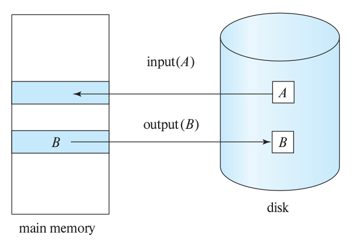
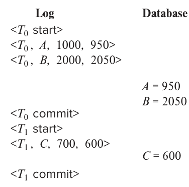
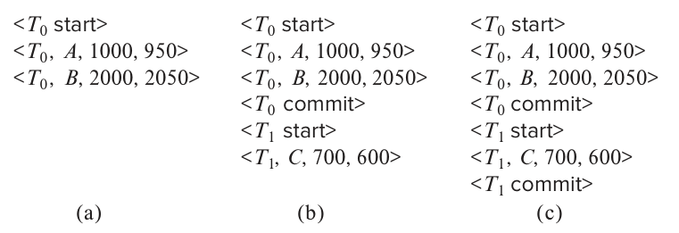
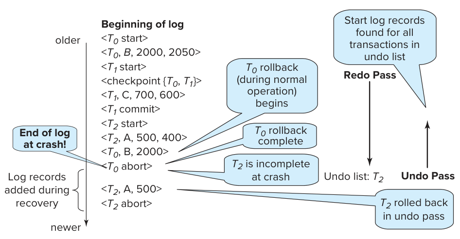
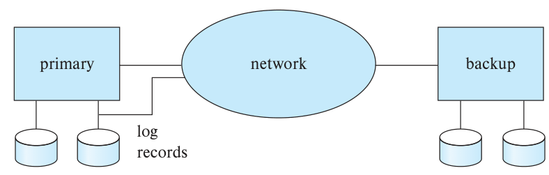
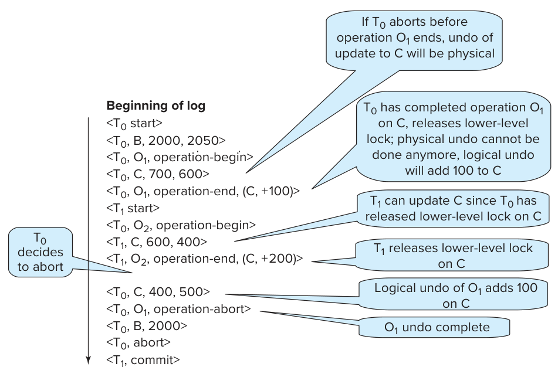
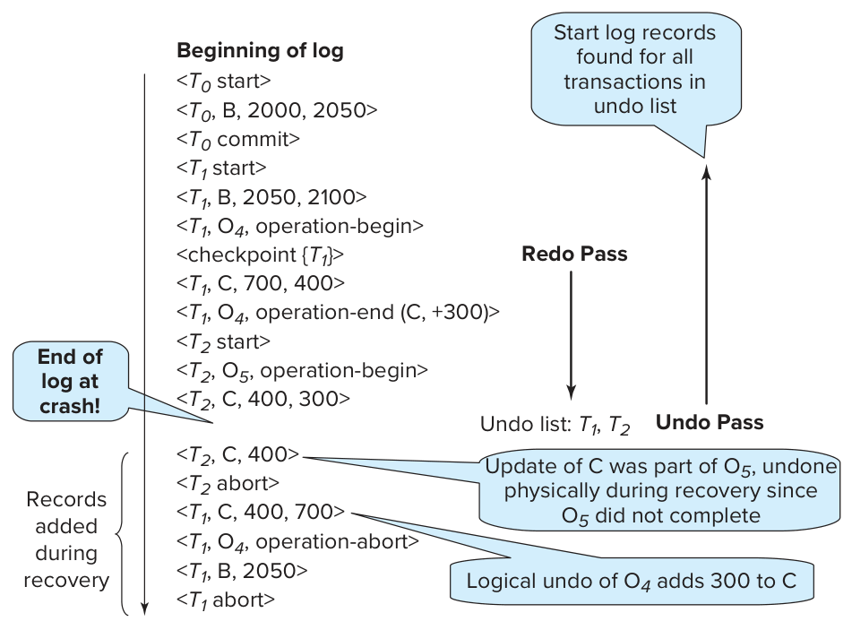
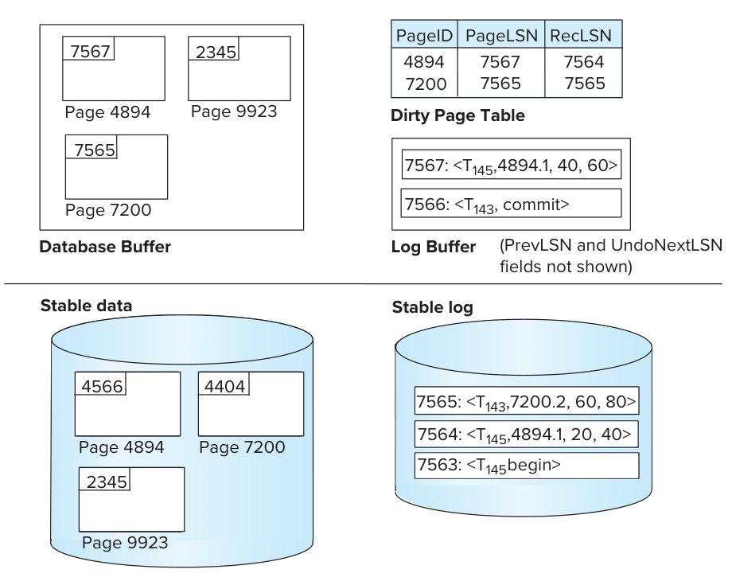
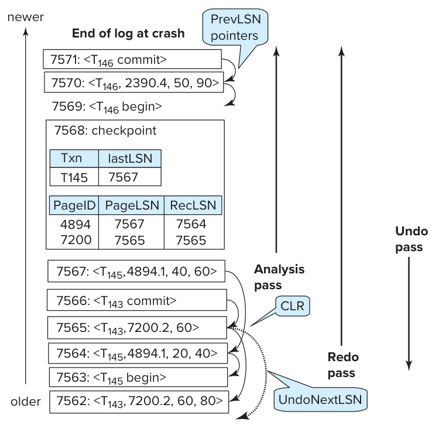

第19章 恢复系统
计算机系统和其他设备一样，可能因各种原因发生故障，例如磁盘损坏、停电、软件错误、机房火灾，乃至人为破坏。任何故障都可能导致信息丢失。数据库系统必须事先采取措施，保证第17章介绍的事务原子性和持久性。恢复机制是数据库系统不可缺少的组成部分，它能把数据库恢复到故障发生前的一致状态。
恢复机制还必须支持高可用性，也就是让数据库在绝大部分时间内都能正常使用。为了在机器故障时，以及因软硬件升级、维护而计划停机时保持高可用性，恢复机制必须能让数据库的备份副本与主副本的当前内容保持同步。存放主副本的机器发生故障后，事务处理就可以在备份副本上继续进行。
19.1 故障分类
系统可能发生多种故障，每种故障都需要采用相应的处理方式。本章只讨论以下几类。
- 事务故障。下列两种错误可能导致事务失败：
- 逻辑错误。输入无效、找不到数据、溢出、资源使用量超过限制等内部条件，使事务无法正常执行下去。
- 系统错误。系统进入了某种不希望出现的状态，例如死锁，导致事务无法正常执行下去。不过，这个事务可以在以后重新执行。
- 系统崩溃。硬件故障、数据库软件或操作系统中的 bug，导致易失性存储器的内容丢失，事务处理停止。非易失性存储器中的内容保持完整，没有损坏。
假定硬件错误和软件 bug 只会使系统停机，而不会破坏非易失性存储器的内容，这称为故障停止假设（fail-stop assumption）。设计良好的系统会在硬件和软件中设置大量内部检查，一旦发现错误就停止运行。因此，这个假设是合理的。 - 磁盘故障。磁头损坏或数据传输期间发生故障，使某个磁盘块的内容丢失。系统利用其他磁盘上的数据副本，或 DVD、磁带等三级存储介质上的归档备份进行恢复。
要确定故障后的恢复方法，需要先明确各类数据存储设备可能发生什么故障，再考虑这些故障会怎样影响数据库内容。这样就能设计出在故障发生时仍能保证数据库一致性和事务原子性的算法。这些算法称为恢复算法，包含两部分：
- 正常处理事务时执行的操作，用来保存足够的信息，以便发生故障后进行恢复。
- 故障发生后执行的操作，用来恢复数据库内容，使其满足数据库一致性、事务原子性和持久性的要求。
19.2 存储
第13章介绍过，数据库中的数据项可以存放在多种存储介质上，并通过相应方式访问。第17.3节又按速度、容量和抵御故障的能力区分了存储介质，列出以下三类：
- 易失性存储器。
- 非易失性存储器。
- 稳定存储器。
稳定存储器——更准确地说，是对稳定存储器的近似实现——在恢复算法中起着重要作用。
19.2.1 稳定存储器的实现
实现稳定存储器，需要把所需信息复制到多个故障模式相互独立的非易失性存储介质上，通常是磁盘；还需要控制信息的更新过程，保证数据传输期间的故障不会损坏这些信息。
回顾第12章，RAID 系统保证单个磁盘发生故障时，即使故障发生在数据传输过程中，也不会丢失数据。最简单、速度最快的 RAID 形式是镜像磁盘，它在不同磁盘上保存每个块的两个副本。其他 RAID 形式可以降低成本，但性能也会下降。
不过，RAID 无法防止火灾、洪水等灾难造成的数据丢失。许多系统把磁带归档备份放在异地，以应对这类灾难。但磁带无法实时运送到异地，最近一次运出磁带之后发生的更新，仍可能在灾难中丢失。保护更严密的系统除了在本地磁盘上存储数据块，还会通过计算机网络把稳定存储器中每个块的副本写到远程站点。写入本地存储器的同时也会向远程系统输出相同的块，所以输出操作一旦完成，即使发生火灾、洪水等灾难，输出的数据也不会丢失。第19.7节将讨论这类远程备份系统。
本节余下部分讨论如何避免数据传输故障破坏存储介质中的内容。内存与磁盘之间的块传输可能有三种结果：
- 成功完成：传输的信息完整到达目标位置。
- 部分失败：故障发生在传输过程中，目标块中的信息有误。
- 完全失败：故障发生得足够早，目标块保持原样。
我们的要求是：数据传输发生故障时，系统能够检测到故障，并调用恢复过程，把该块恢复到一致状态。为此，每个逻辑数据库块都必须对应两个物理块。镜像磁盘的两个块位于同一地点；远程备份则把一个块放在本地，另一个放在远程站点。输出操作按以下步骤执行：
- 把信息写入第一个物理块。
- 第一次写入成功后，把相同信息写入第二个物理块。
- 第二次写入成功后，整个输出操作才算完成。
如果系统在写块期间发生故障，同一个块的两个副本可能不一致。恢复时，系统需要检查每个块的两个副本。如果二者相同，而且没有检测到错误，就无须采取其他操作。回顾前面的内容，每个磁盘块都带有校验和，用来检测块错误，包括只写了一部分的情况。如果系统发现一个块有错误，就用另一个块的内容替换它。如果两个块都没有可检测的错误，但内容不同，系统既可以用第二个块覆盖第一个块，也可以用第一个块覆盖第二个块。无论选择哪种方式，恢复过程都保证：对稳定存储器的一次写入，要么完全成功，即所有副本都得到更新，要么不产生任何改变。
恢复时逐一比较每对对应块，代价很高。利用少量非易失性 RAM 记录哪些块正在写入，就能大幅降低这个代价。恢复时只需比较故障发生时正在写入的块。
把块写入远程站点的协议，与写入镜像磁盘系统的协议相似。第12章讨论过这些协议，练习题12.6尤其涉及这一问题。
这个过程很容易扩展到每个稳定存储块保存任意多个副本的情况。增加副本数可以把故障概率降得比两个副本时更低，不过通常用两个副本来模拟稳定存储器已经合理。
19.2.2 数据访问
第12章介绍过，数据库永久保存在非易失性存储器中，通常是磁盘；任一时刻只有部分数据库位于内存中。在内存数据库中，整个数据库都在内存里，但非易失性存储器中仍会保存一个副本，以免内存内容丢失时数据也随之丢失。数据库被划分成固定长度的存储单元，称为块。磁盘读写以块为传输单位，每个块可以包含多个数据项。这里假定数据项不会跨越两个或更多块。对银行、大学等多数数据处理应用，这个假定符合实际。
事务先把信息从磁盘读入主存，再把信息输出回磁盘，输入和输出都以块为单位。磁盘上的块称为物理块，暂时存放在主存中的块称为缓冲块。用于暂存这些块的内存区域称为磁盘缓冲区。
磁盘与主存之间的块传输通过以下两种操作发起：
input(B)：把物理块 B 传送到主存。
output(B)：把缓冲块 B 传送到磁盘，替换磁盘上对应的物理块。
图19.1展示了这个过程。
从概念上说，每个事务 Tᵢ 都有一个私有工作区，存放 Tᵢ 所访问和更新的数据项的副本。系统在事务开始时创建工作区，在事务提交或中止时删除它。事务 Tᵢ 工作区中数据项 X 的副本记为 xᵢ。事务通过在私有工作区与系统缓冲区之间传递数据，与数据库系统交互。数据传递采用以下两种操作：
read(X)：把数据项 X 的值赋给局部变量 xᵢ，执行步骤如下：
a. 如果 X 所在的块 Bₓ 不在主存中，就执行 input(Bₓ)。
b. 把缓冲块中 X 的值赋给 xᵢ。
write(X)：把局部变量 xᵢ 的值赋给缓冲块中的数据项 X，执行步骤如下：
a. 如果 X 所在的块 Bₓ 不在主存中，就执行 input(Bₓ)。
b. 把 xᵢ 的值赋给缓冲块 Bₓ 中的 X。
两种操作都有可能需要把块从磁盘传送到主存，但都没有要求把块从主存传回磁盘。
缓冲块最终会写回磁盘：可能是因为缓冲区管理器需要把这块内存用于其他用途，也可能是数据库系统希望把对 B 的修改反映到磁盘上。数据库系统执行 output(B)，称为对缓冲块 B 的强制输出。

图19.1：input(A) 把磁盘中的块 A 读入主存（main memory）；output(B) 把主存中的块 B 写回磁盘（disk）。
事务第一次访问数据项 X 时，必须执行 read(X)。之后对 X 的所有更新都在 xᵢ 上完成。在执行过程中的任意时刻，事务都可以执行 write(X)，把对 X 的修改反映到数据库中；对 xᵢ 的最后一次写入之后，必须执行 write(X)。
X 所在缓冲块 Bₓ 的 output(Bₓ) 操作无须紧接着 write(X) 执行，因为 Bₓ 中可能还包含正在被访问的其他数据项，实际输出可以推迟。如果系统在 write(X) 之后、output(Bₓ) 之前崩溃，X 的新值还没有写入磁盘，就会丢失。稍后将看到，数据库系统会执行额外操作，保证已提交事务的更新即使遇到系统崩溃也不会丢失。
19.3 恢复与原子性
再来看简化的银行系统。事务 Tᵢ 从账户 A 向账户 B 转账50美元，A 和 B 的初始余额分别是1000美元和2000美元。设 Bₐ 和 Bᵦ 分别为 A、B 所在的缓冲块。假定 Tᵢ 执行期间，系统在 output(Bₐ) 之后、output(Bᵦ) 之前崩溃。内存内容已经丢失，我们无法知道事务执行到了什么状态。
系统重启后，A 的值是950美元，B 的值是2000美元，显然不满足事务 Tᵢ 的原子性要求。遗憾的是，仅检查数据库状态，无法判断崩溃前哪些块已经输出、哪些还没有。可能事务已经完成，只是稳定存储器中 A 和 B 的初值分别为1000美元和1950美元；也可能事务还没有改变稳定存储器，A 和 B 的初值原本就是950美元和2000美元；还可能只输出了更新后的 B，未输出更新后的 A；或只输出了更新后的 A，未输出更新后的 B。
我们的目标是让 Tᵢ 对数据库的修改全部发生，或全部不发生。但如果 Tᵢ 要修改多处数据，就可能需要多次输出操作，而故障可能发生在部分修改已经输出、其余修改尚未输出的时候。
为了保证原子性，首先必须把描述修改的信息输出到稳定存储器中，此时先不修改数据库本身。稍后将看到，这些信息可以帮助我们保证已提交事务的全部修改都反映到数据库中，必要时可在崩溃后的恢复过程中完成。还需要保存被修改数据项的旧值，以便执行修改的事务失败或中止时，利用这些信息撤销该事务的修改。
最常用的恢复技术以日志记录为基础，本章将详细介绍基于日志的恢复。另一种方法称为影子复制，文本编辑器会采用它，数据库系统则不采用。原书第914页的专栏19.1概述了这一方法。
19.3.1 日志记录
记录数据库修改时，使用最广泛的数据结构是日志。日志由一系列日志记录组成，记载数据库中的所有更新活动。
日志记录有几种类型。更新日志记录描述一次数据库写入，包含以下字段：
- 事务标识符：唯一标识执行此次写操作的事务。
- 数据项标识符：唯一标识被写入的数据项。通常使用数据项在磁盘上的位置，由所在块的块标识符和块内偏移量组成。
- 旧值：写入前的数据项值。
- 新值：写入后数据项应具有的值。
我们把更新日志记录表示为 〈Tᵢ, Xⱼ, V₁, V₂〉，表示事务 Tᵢ 对数据项 Xⱼ 执行了一次写操作：写入前 Xⱼ 的值为 V₁，写入后为 V₂。另外还有专门的日志记录，用于记载事务处理期间的重要事件，例如事务开始、提交或中止。以下是其中几种类型：
〈Tᵢ start〉：事务 Tᵢ 已开始。〈Tᵢ commit〉：事务 Tᵢ 已提交。〈Tᵢ abort〉：事务 Tᵢ 已中止。
后面还会介绍其他类型的日志记录。
每当事务执行写操作，都必须在修改数据库之前，先创建对应的日志记录并追加到日志中。一旦有了日志记录，就可以根据需要把修改输出到数据库。对于已经输出到数据库的修改，也可以利用日志记录中的旧值字段将其撤销。
日志要用于系统故障和磁盘故障后的恢复，就必须保存在稳定存储器中。目前暂且假定，每条日志记录一经创建，便立即写到稳定存储器中日志的末尾。第19.5节将讨论什么时候可以安全地放宽这一要求，以减少记录日志的开销。日志完整记录了数据库的所有活动，因此可能积累过多数据。第19.3.6节将说明什么时候可以安全地删除日志信息。
专栏19.1 影子副本与影子分页
采用影子复制方案时，事务要更新数据库，首先会创建一个完整的数据库副本。所有更新都在新副本上进行，原副本称为影子副本，保持不变。如果事务在任何时刻需要中止，系统只要删除新副本即可，原副本始终未受影响。磁盘上保存着一个名为 db-pointer 的指针，用来标识数据库的当前副本。
事务进入部分提交状态，即执行完最后一条语句后，按以下方式完成提交：首先要求操作系统确保新副本的所有页都已写到磁盘，Unix 系统为此使用 fsync 命令。操作系统写完所有页后，数据库系统更新 db-pointer，让它指向新副本，新副本由此成为数据库的当前副本。随后删除原副本。更新后的 db-pointer 写入磁盘的那一刻，事务就算提交了。
这种实现依赖于 db-pointer 写入的原子性：它的所有字节要么全部写入，要么一个也不写入。磁盘系统提供整个块的原子更新，至少也会提供单个磁盘扇区的原子更新。也就是说，只要确保 db-pointer 完整地落在同一个扇区内，磁盘系统就能保证对它的更新具有原子性。把 db-pointer 放在一个块的开头，就能满足这一要求。
文本编辑器常用影子复制方案：保存文件相当于提交事务，不保存就退出相当于中止事务。影子复制可以用于小型数据库，但复制大型数据库的代价很高。它的一种变体称为影子分页，通过以下方式减少复制量：使用一张页表保存指向所有页的指针，把页表本身以及所有被更新的页复制到新位置。事务没有更新的页无须复制，新页表只需保存指向原页的指针。事务提交时，以原子操作更新页表指针，让它指向新副本；这个指针承担了 db-pointer 的作用。
影子分页难以有效支持并发事务，因此在数据库中应用并不广泛。
19.3.2 数据库修改
前面提到，事务修改数据库之前会先创建日志记录。事务需要中止时，系统可依据日志撤销其修改；事务已经提交，但修改尚未存入磁盘数据库时系统就崩溃了，系统也可依据日志重做这些修改。为了理解日志在恢复中的作用，先来看事务修改数据项时的步骤：
- 事务在自己私有的主存区域中进行计算。
- 事务修改主存磁盘缓冲区中包含该数据项的数据块。
- 数据库系统执行输出操作，把该数据块写入磁盘。
事务更新磁盘缓冲区或磁盘本身，就称为修改了数据库；更新主存中的私有工作区不算修改数据库。如果事务直到提交之后才修改数据库，称为采用延迟修改技术。如果事务还处于活动状态时就修改数据库，称为采用立即修改技术。延迟修改有一项开销：事务必须为所有被更新的数据项建立局部副本。此外，事务读取自己已经更新的数据项时，必须从局部副本读取。
本章介绍的恢复算法支持立即修改。这些算法也能正确用于延迟修改，但在这种情况下还可以做些优化来降低开销。具体细节留作练习。
恢复算法必须考虑多种因素，包括：
- 事务可能已经提交，但某些数据库修改还只存在于主存的磁盘缓冲区中，尚未进入磁盘上的数据库。
- 事务可能在活动状态下就修改了数据库，却因后续故障而需要中止。
所有数据库修改之前都必须创建日志记录，所以系统既掌握数据项修改前的旧值，也掌握即将写入的新值。系统可以据此按需执行撤销和重做操作。
- 利用日志记录执行撤销（undo）时，把该记录指定的数据项设为记录中的旧值。
- 利用日志记录执行重做（redo）时，把该记录指定的数据项设为记录中的新值。
19.3.3 并发控制与恢复
假如并发控制机制允许事务 T₁ 修改数据项 X 后，在 T₁ 提交之前，另一个事务 T₂ 再次修改 X，那么通过恢复 X 的旧值，即 T₁ 更新前的值，来撤销 T₁ 时，也会撤销 T₂ 的影响。为避免这种情况，恢复算法通常要求：一个事务修改某数据项之后，其他事务必须等它提交或中止，才能修改该数据项。
对所有要更新的数据项取得排他锁，并将锁保持到事务提交，就能保证这一要求。这就是严格两阶段锁。快照隔离和基于验证的并发控制技术，也会在验证阶段、修改数据项之前取得排他锁，并保持到事务提交，因此同样满足上述要求。
第19.8节将讨论哪些情况下可以放宽这一要求。
采用快照隔离或验证进行并发控制时，从概念上说，事务的数据库更新会推迟到部分提交时才发生，延迟修改技术很适合这些并发控制机制。不过，有些快照隔离实现采用立即修改，按需生成逻辑快照：事务需要读取一个已被并发事务更新的数据项时，系统先复制这个已经更新的数据项，再在副本上回滚并发事务所做的更新。同样，立即修改很适合两阶段锁，但两阶段锁也可以采用延迟修改。
<T0 start>
<T0, A, 1000, 950>
<T0, B, 2000, 2050>
<T0 commit>
<T1 start>
<T1, C, 700, 600>
<T1 commit>
图19.2：系统日志中与 T₀、T₁ 对应的部分。
19.3.4 事务提交
事务的提交日志记录是该事务的最后一条日志记录；当它输出到稳定存储器后，我们就说事务已经提交。此时，之前的所有日志记录也都已经写入稳定存储器，日志中已有足够的信息，保证即使系统崩溃也能重做该事务的更新。如果系统在 〈Tᵢ commit〉 写入稳定存储器之前崩溃，就会回滚事务 Tᵢ。可见，输出包含提交日志记录的块，就是使事务完成提交的那个原子操作。1
多数基于日志的恢复技术，包括本章介绍的技术，都不要求在事务提交时把包含已修改数据项的块输出到稳定存储器，这些块可以稍后再输出。第19.5.2节将进一步讨论这一点。
19.3.5 利用日志重做和撤销事务
下面概述如何利用日志从系统崩溃中恢复，以及如何在正常运行期间回滚事务。故障恢复和回滚过程的具体步骤，留到第19.4节介绍。
考虑简化的银行系统。事务 T₀ 从账户 A 向账户 B 转账50美元：
T0: read(A);
A := A − 50;
write(A);
read(B);
B := B + 50;
write(B).
事务 T₁ 从账户 C 提取100美元：
T1: read(C);
C := C − 100;
write(C).
图19.2列出了日志中与这两个事务有关的部分。
图19.3展示了执行 T₀ 和 T₁ 时，数据库系统和日志中实际输出操作的一种可能顺序。2

图19.3：左列为日志（Log），右列为数据库（Database）；从上往下表示实际输出的先后顺序。A 更新为950，B 更新为2050，C 更新为600。
只要故障没有导致非易失性存储器中的信息丢失，系统就可以利用日志处理。恢复机制使用两个恢复过程，都通过日志找出各事务 Tᵢ 更新过的数据项，以及这些数据项各自的旧值和新值。
redo(Tᵢ)：把事务 Tᵢ 更新过的所有数据项设为新值。重做更新的顺序很重要：从系统崩溃中恢复时，如果对某个数据项应用更新的顺序与原执行顺序不同，最终值就会出错。多数恢复算法，包括第19.4节介绍的算法，都不会逐个事务分别重做，而是只扫描一遍日志，每遇到一条日志记录就执行相应的重做。这样既保留了更新顺序，也提高了效率，因为总共只读一遍日志，无须每个事务各读一遍。undo(Tᵢ)：把事务 Tᵢ 更新过的所有数据项恢复为旧值。第19.4节介绍的恢复机制采用以下做法：
- 撤销操作不仅恢复数据项的旧值，还会写入日志，记录撤销过程中执行的更新。这是一种特殊的仅重做日志记录，无须包含所更新数据项的旧值。对于撤销所做的修改，“旧值”是正在回滚的事务写入的值，“新值”则是撤销操作要恢复的原始值。
和重做一样，撤销操作的执行顺序也很重要，具体细节将在第19.4节介绍。
- 事务 Tᵢ 的撤销完成后，写入一条
〈Tᵢ abort〉日志记录，表明撤销已完成。
第19.4节将说明，每个事务只执行一次 undo(Tᵢ)：可能是在正常处理期间回滚，也可能是在系统崩溃后的恢复中，发现 Tᵢ 既没有提交记录也没有中止记录时回滚。这样，每个事务最终都会在日志中留下提交记录或中止记录。
系统崩溃后，需要查询日志，确定哪些事务应当重做、哪些应当撤销，以保证原子性。
- 日志中有
〈Tᵢ start〉，但既没有〈Tᵢ commit〉也没有〈Tᵢ abort〉，就需要撤销 Tᵢ。 - 日志中有
〈Tᵢ start〉，并且有〈Tᵢ commit〉或〈Tᵢ abort〉，就需要重做 Tᵢ。日志中已经有中止记录，为什么还要重做？因为此时日志里也有撤销操作写入的仅重做记录，把它们一起重做，最终效果就是撤销 Tᵢ 的修改。这一点重复工作可以简化恢复算法，缩短整体恢复时间。
用银行系统的例子说明。事务依次执行，先执行 T₀，再执行 T₁。假定系统在两个事务全部完成之前崩溃。下面考虑三种情况，图19.4给出了各自的日志状态。
第一种情况：T₀ 的 write(B) 所对应的日志记录刚写入稳定存储器，系统就崩溃了，如图19.4a。系统恢复运行后，在日志中找到 〈T₀ start〉，却找不到对应的 〈T₀ commit〉 或 〈T₀ abort〉，因此必须撤销 T₀，执行 undo(T₀)。磁盘上账户 A、B 的值分别恢复为1000美元和2000美元。
第二种情况：T₁ 的 write(C) 所对应的日志记录刚写入稳定存储器，系统就崩溃了，如图19.4b。系统恢复运行后，需要执行两个恢复操作。日志中有 〈T₁ start〉，没有 〈T₁ commit〉 或 〈T₁ abort〉，因此要执行 undo(T₁)。同时，日志中既有 〈T₀ start〉 又有 〈T₀ commit〉，因此要执行 redo(T₀)。整个恢复过程结束后，账户 A、B、C 的值分别为950美元、2050美元和700美元。

图19.4：同一份日志在三个时刻的状态。a：T₀ 尚未提交；b：T₀ 已提交，T₁ 尚未提交；c：两个事务都已提交。
最后一种情况：〈T₁ commit〉 刚写入稳定存储器，系统就崩溃了，如图19.4c。系统恢复运行后，T₀ 和 T₁ 都需要重做，因为日志中有 〈T₀ start〉、〈T₀ commit〉，也有 〈T₁ start〉、〈T₁ commit〉。执行 redo(T₀) 和 redo(T₁) 后，账户 A、B、C 的值分别为950美元、2050美元和600美元。
19.3.6 检查点
系统崩溃后，需要查询日志，确定哪些事务要重做、哪些要撤销。原则上，要得到这些信息，就得搜索整个日志。这种做法有两个主要问题：
- 搜索很耗时。
- 按照算法需要重做的事务，大部分已经把更新写入了数据库。重做虽无害，却会延长恢复时间。
为减少这些开销，我们引入检查点。
先介绍一种简单的检查点机制。它要求：检查点操作期间不允许执行任何更新；执行检查点时，将所有已修改的缓冲块输出到磁盘。后面会讨论如何修改检查点和恢复过程，放宽这两项要求，以提供更大的灵活性。
执行检查点的步骤如下：
- 把当前主存中的所有日志记录输出到稳定存储器。
- 把所有已修改的缓冲块输出到磁盘。
- 把一条形如
〈checkpoint L〉的日志记录输出到稳定存储器，其中 L 是检查点发生时仍处于活动状态的事务列表。
检查点执行期间，事务不能执行任何更新，包括写缓冲块和写日志。第19.5.2节会讨论怎样保证这一要求。
日志中的 〈checkpoint L〉 记录可以简化恢复过程。假定事务 Tᵢ 在检查点之前就已完成，那么 〈Tᵢ commit〉 或 〈Tᵢ abort〉 必然出现在检查点记录之前。Tᵢ 对数据库的所有修改，要么在检查点之前就已写入数据库，要么在执行检查点时写入。因此，恢复时无须再重做 Tᵢ。
系统崩溃后，会查找日志中的最后一条 〈checkpoint L〉。可以从日志末尾反向搜索，找到的第一条检查点记录就是目标。
只有 L 中的事务，以及该检查点记录写入之后才开始执行的事务，才需要重做或撤销。把这些事务的集合记为 T。
- 对 T 中的每个事务 Tₖ，如果日志里既没有
〈Tₖ commit〉也没有〈Tₖ abort〉，执行undo(Tₖ)。 - 对 T 中的每个事务 Tₖ，如果日志里有
〈Tₖ commit〉或〈Tₖ abort〉，执行redo(Tₖ)。
只要检查从最后一条检查点记录开始的日志部分，就能确定事务集合 T，并判断其中每个事务是否有提交或中止记录。
例如，有事务集合 {T₀, T₁, …, T₁₀₀}。假定最近一次检查点发生时，T₆₇ 和 T₆₉ 正在执行，T₆₈ 以及所有下标小于67的事务都已完成。那么恢复时只需考虑 T₆₇、T₆₉、…、T₁₀₀。已经完成，即已提交或已中止的事务，需要重做；尚未完成的事务，需要撤销。
再来看检查点记录中的事务集合 L。对于其中每个事务 Tᵢ，如果它最终未提交，就可能需要利用检查点之前的日志记录撤销它。不过，在 L 中所有事务的 〈Tᵢ start〉 记录里，最早那条记录之前的全部日志，在检查点完成后就不再需要了。数据库系统需要回收这些记录占用的空间时，可以将其删除。
要求检查点期间不能更新缓冲块和日志，会带来不便，因为事务处理必须暂停。模糊检查点允许在缓冲块输出期间继续执行事务更新。第19.5.4节介绍模糊检查点机制。第19.9节还会介绍一种机制，它不仅允许并发更新，甚至不要求在检查点时把所有已修改缓冲块都输出到磁盘。
19.4 恢复算法
前面讨论恢复时，已经说明如何找出需要重做和撤销的事务，但还没有给出执行这些操作的确切算法。现在可以介绍完整的恢复算法了：事务故障后利用日志记录恢复；系统崩溃后结合最近的检查点与日志记录恢复。
本节算法要求：如果一个数据项已经被尚未提交的事务更新，其他事务就不能修改它，直到前一个事务提交或中止。第19.3.3节讨论过这个限制。
19.4.1 事务回滚
先考虑正常运行期间的事务回滚，也就是非系统崩溃恢复期间的回滚。事务 Tᵢ 的回滚步骤如下：
- 反向扫描日志，每找到一条属于 Tᵢ、形如
〈Tᵢ, Xⱼ, V₁, V₂〉的记录，就执行：
a. 把 V₁ 写入数据项 Xⱼ。
b. 向日志写入一条特殊的仅重做记录 〈Tᵢ, Xⱼ, V₁〉，V₁ 就是回滚期间要恢复到 Xⱼ 的值。这种记录也称为补偿日志记录。它无须包含撤销信息，因为我们永远无须撤销这个撤销操作。稍后将说明其用途。
- 找到
〈Tᵢ start〉时，停止反向扫描，并写入〈Tᵢ abort〉。
这样，事务执行的所有更新，以及为事务执行的所有更新，包括把数据项恢复为旧值的操作，都记录在日志中了。第19.4.2节会说明这样做的好处。
19.4.2 系统崩溃后的恢复
数据库系统在崩溃后重启时，恢复分两个阶段进行。
- 重做阶段：从最后一个检查点开始正向扫描日志，重新执行所有事务的更新。重放的日志记录包括崩溃前已经回滚的事务，也包括崩溃时尚未提交的事务。
这个阶段还会找出崩溃时尚未完成、需要回滚的全部事务。这些事务可能在检查点时就已处于活动状态，因而出现在检查点记录的事务列表中；也可能在检查点之后才开始。它们在日志中既没有 〈Tᵢ abort〉，也没有 〈Tᵢ commit〉。
扫描日志时，具体执行以下步骤：
a. 将待回滚事务列表 undo-list 初始化为 〈checkpoint L〉 中的列表 L。
b. 遇到普通日志记录 〈Tᵢ, Xⱼ, V₁, V₂〉，或仅重做日志记录 〈Tᵢ, Xⱼ, V₂〉，就重做该操作，把 V₂ 写入 Xⱼ。
c. 遇到 〈Tᵢ start〉，把 Tᵢ 加入 undo-list。
d. 遇到 〈Tᵢ abort〉 或 〈Tᵢ commit〉，从 undo-list 中移除 Tᵢ。
重做阶段结束后，undo-list 包含所有尚未完成的事务，也就是崩溃前既没有提交、也没有完成回滚的事务。
- 撤销阶段：系统从日志末尾开始反向扫描，回滚
undo-list中的全部事务。
a. 遇到属于 undo-list 中某事务的日志记录，就像回滚失败事务时一样，执行相应的撤销操作。
b. 遇到 undo-list 中事务 Tᵢ 的 〈Tᵢ start〉 记录，向日志写入 〈Tᵢ abort〉，并把 Tᵢ 移出 undo-list。
c. undo-list 变空时，撤销阶段结束。这意味着系统已经找到了最初列入 undo-list 的每个事务的开始记录。
撤销阶段结束后，可以恢复正常的事务处理。
重做阶段会重放最近一次检查点之后的每条日志记录。也就是说，检查点之后执行过、且日志记录已进入稳定存储器的全部更新，都将再次执行。其中既有尚未完成事务的操作，也有为回滚失败事务而执行的操作。它们按原来的顺序重放，因此这个过程称为重复历史。连失败事务也重放，看起来可能浪费工作，但能简化恢复机制。
图19.5展示了正常运行时记录的操作和故障恢复时执行的操作。图中的日志表明，系统崩溃之前，T₁ 已提交，T₀ 已完全回滚。请留意，回滚 T₀ 时恢复了数据项 B 的值；检查点记录中的活动事务列表包含 T₀ 和 T₁。
崩溃恢复的重做阶段会重做最后一个检查点之后的全部操作。开始时，undo-list 包含 T₀、T₁。遇到 T₁ 的提交记录时移除 T₁；遇到 T₂ 的开始记录时加入 T₂；遇到 T₀ 的中止记录时移除 T₀，最终只剩 T₂。撤销阶段从日志末尾反向扫描，找到 T₂ 更新 A 的记录后，恢复 A 的旧值，并写入一条仅重做日志记录。找到 T₂ 的开始记录后，追加 T₂ 的中止记录。此时 undo-list 已空，撤销阶段结束，恢复完成。

图19.5：日志由上方较早的记录（older）向下方较新的记录（newer）排列。左侧标出了日志起点（Beginning of log）、重做扫描（Redo Pass）、撤销扫描（Undo Pass）以及崩溃时的日志末尾（End of log at crash）。T₀ 在正常运行期间开始回滚，随后完成回滚；T₂ 在崩溃时尚未完成，进入待撤销列表，并在撤销扫描中回滚。最下方是恢复期间追加的日志记录。找到待撤销列表中所有事务的开始记录后，撤销扫描结束。
19.4.3 优化提交处理
事务提交要求它的日志记录已强制写入磁盘。如果每个事务都单独刷新一次日志，每次提交都会产生较大的日志写入开销。成组提交技术可以提高提交速率：事务执行完成后，系统先等待多个事务完成，或等待一段规定时间，再把等待中的事务一起提交。写到稳定存储器中的日志块于是包含多个事务的记录。合理选择组的大小和最长等待时间，既能让写入的块尽量填满，又不会让事务等得太久。平均到每个已提交事务上的输出操作次数就减少了。
如果日志写入硬盘，一个块的写入大约需要5～10毫秒。不使用成组提交时，每秒最多提交100～200个事务。如果一个磁盘块能容纳10个事务的日志，成组提交就可以让每秒提交量达到1000～2000个事务。
如果日志写入闪存，一个块的写入大约需要100微秒，不使用成组提交也能每秒提交10000个事务。如果一个块能容纳10个事务的日志，成组提交就能达到每秒100000个事务。对于闪存，成组提交还有一个好处：减少同一页被反复写入的次数，进而减少代价较高的擦除操作。回顾前面的内容，闪存系统会把逻辑页重新映射到已擦除的物理页上，以免在写页时等待擦除；但回收旧版本页时，终究还是要执行擦除。
成组提交虽然降低了日志开销，却会稍微延迟更新事务的提交。提交速率低时，这点延迟可能得不偿失；提交速率高时，成组提交可以降低整体提交延迟。
除了数据库内部优化，程序员也可以采取措施改善事务提交性能。例如，一个向数据库装载数据的应用，如果每次插入都作为独立事务执行，每秒插入量就会受每秒块写入次数限制。如果应用等一次插入完成后才开始下一次，成组提交既无益处，还可能拖慢系统。但把一批插入放进同一个事务，就可以明显改善性能：多次插入的日志记录在同一页中一起写入，每秒可执行的插入次数也随之增加。
19.5 缓冲区管理
本节讨论实现崩溃恢复机制时的几个细节。这些细节关系到能否保证数据一致性，同时尽量减少与数据库交互的额外开销。
19.5.1 日志记录缓冲
到目前为止，我们一直假定每条日志记录创建后立即输出到稳定存储器。这会产生较高开销，原因有几个：通常稳定存储器的输出以块为单位，而日志记录一般远小于一个块，因此每输出一条记录，物理层都要输出大得多的数据量。此外，第19.2.1节提到，向稳定存储器输出一个块，可能涉及物理层的多次输出操作。
向稳定存储器输出一个块的代价较高，因此最好一次输出多条日志记录。为此，可以先把记录写入主存中的日志缓冲区，暂存后再输出。日志缓冲区收集多条记录，再用一次输出操作将它们写入稳定存储器。稳定存储器中的日志顺序，必须与写入日志缓冲区时的顺序完全一致。
采用日志缓冲后，一条日志记录可能只在主存这种易失性存储器中停留较长时间，之后才输出到稳定存储器。系统崩溃会丢失这类记录，因此恢复技术还必须满足额外要求，才能保证事务原子性：
〈Tᵢ commit〉写入稳定存储器后，事务 Tᵢ 才进入提交状态。〈Tᵢ commit〉写入稳定存储器之前，属于 Tᵢ 的所有日志记录必须已经写入稳定存储器。- 主存中的一个数据块输出到非易失性存储器中的数据库之前，与该块数据有关的所有日志记录必须已经写入稳定存储器。
最后一条称为预写日志规则（write-ahead logging，WAL）。严格来说，WAL 只要求日志中的撤销信息已经输出到稳定存储器，允许稍后再写重做信息。对于把撤销信息与重做信息保存在不同日志记录中的系统，这一区别才有实际意义。
这三条规则说明了哪些情况下，某些日志记录必须已经输出到稳定存储器。提前输出日志并不会造成问题。因此，当系统发现必须输出某条记录时，如果主存中的日志足以填满一个块，就输出整块记录；如果不足一个块，就把主存中的全部日志记录组成一个未填满的块输出。
把缓冲的日志写入磁盘，有时称为日志强制写入（log force）。
19.5.2 数据库缓冲
第19.2.2节介绍了两级存储结构：数据库存放在非易失性存储器，也就是磁盘中，需要时才把数据块读入主存。主存通常远小于整个数据库，因此要把另一个块 B₂ 读入内存时，可能必须覆盖内存中的块 B₁。如果 B₁ 已被修改，就必须先输出 B₁，再输入 B₂。第13.5.1节提到，这种存储结构类似于操作系统中的虚拟内存。
一种看似自然的要求是，事务提交时，把修改过的所有块强制输出到磁盘。这称为强制策略（force）。另一种选择是非强制策略（no-force），允许事务提交时，某些已修改的块还没有写回磁盘。本章所有恢复算法都能在非强制策略下正确工作。这种策略可使事务更快提交，还允许一个块积累多次更新后再输出到稳定存储器，对频繁更新的块可以大幅减少输出次数。因此，多数系统采用非强制策略。
类似地，可以要求仍处于活动状态的事务所修改的块不得写入磁盘，这称为禁止偷取策略（no-steal）。另一种选择是允许偷取策略（steal）：即使修改该块的事务尚未全部提交，系统也可以把已修改块写入磁盘。只要遵守预写日志规则，本章介绍的恢复算法在允许偷取策略下都能正确工作。禁止偷取策略还有一个问题：如果事务执行大量更新，缓冲区可能被不能写回淘汰的更新页占满，使事务无法继续。因此，多数系统采用允许偷取策略。
再用银行系统中的 T₀、T₁ 说明为什么需要预写日志。假定日志状态如下：
<T0 start>
<T0, A, 1000, 950>
此时 T₀ 执行 read(B)。假定 B 所在的块不在主存中，主存又已满，系统选择把 A 所在的块输出到磁盘。如果输出后系统崩溃，数据库中账户 A、B、C 的值分别为950美元、2000美元和700美元，处于不一致状态。不过，WAL 要求在输出 A 所在块之前，先把 〈T₀, A, 1000, 950〉 输出到稳定存储器。恢复时，系统就可以利用这条记录使数据库回到一致状态。
块 B₁ 写入磁盘之前，与 B₁ 中数据有关的全部日志记录必须先输出到稳定存储器。同时，输出 B₁ 期间不能有写 B₁ 的操作，否则可能违反 WAL。可以通过一种专门的加锁方式保证这一点：
- 事务写入数据项前，先取得该数据项所在块的排他锁；更新一完成就立即释放。
- 输出块时按以下步骤进行：
- 取得块的排他锁，确保没有事务正在写这个块。
- 将日志输出到稳定存储器，直到与 B₁ 有关的全部记录都已输出。
- 将 B₁ 输出到磁盘。
- 输出完成后释放锁。
缓冲块上的锁与事务并发控制所用的锁无关，不按两阶段方式释放这些锁，不会影响事务的可串行化性。这类锁以及其他持有时间很短的类似锁，通常称为闩锁（latch）。
缓冲块上的锁还可以保证检查点期间不更新缓冲块、不生成日志记录。执行检查点前，取得所有缓冲块的排他锁，以及日志的排他锁，就能实施这一限制。检查点一完成，便可释放这些锁。
数据库系统通常有一个进程，持续循环检查缓冲块，把已修改的缓冲块写回磁盘。输出时当然也要遵守上述加锁协议。持续写回可以尽量减少缓冲区中的脏块，也就是在缓冲区中修改后尚未输出的块。这既减少了检查点时必须输出的块数，也使需要淘汰缓冲块时，更可能找到一个干净块，于是可以立即输入新块，无须等待输出完成。
19.5.3 操作系统在缓冲区管理中的作用
管理数据库缓冲区有两种方法。
- 数据库系统保留一部分主存，自行管理缓冲区。 数据块传输由数据库系统按照第19.5.2节的要求管理。
缺点是主存使用不够灵活。缓冲区必须足够小，给其他应用留下所需内存。但即使其他应用没有运行，数据库也无法利用全部可用内存。同样，即使数据库缓冲区中有些页闲置，其他应用也不能使用预留给数据库的这部分主存。
- 在操作系统提供的虚拟内存中实现数据库缓冲区。 操作系统掌握所有进程的内存需求，理想情况下，应由它决定哪些缓冲块需要强制输出到磁盘，以及何时输出。但为了满足第19.5.1节的 WAL 要求，操作系统不应自行写出数据库缓冲页，而应请求数据库系统强制输出。数据库系统先把有关日志写入稳定存储器，再把缓冲块强制输出到数据库。
遗憾的是，几乎所有当代操作系统都完全控制虚拟内存。操作系统在磁盘上预留一块交换空间，存放当前不在主存中的虚拟内存页。操作系统决定输出 Bₓ 时，会把它写入交换空间，数据库系统无法控制这一缓冲块输出过程。
因此，如果数据库缓冲区位于虚拟内存中，数据库文件与虚拟内存缓冲区之间的传输，就必须由数据库系统管理，并由它保证前述 WAL 要求。
这样可能增加磁盘输出。操作系统输出 Bₓ 时，写入的是虚拟内存交换空间，并非数据库。等数据库系统需要输出 Bₓ 时，操作系统可能先要从交换空间将其读回。一次 Bₓ 输出由此可能变成两次输出——操作系统一次、数据库系统一次——外加一次额外输入。
这两种方法都有缺点，但除非操作系统专门支持数据库日志的要求，否则只能选择其一。
19.5.4 模糊检查点
第19.3.6节的检查点技术要求在检查点期间暂停所有数据库更新。如果缓冲区中的页很多，检查点可能耗时较长，事务处理会出现难以接受的中断。
可以修改这一技术：检查点记录一旦写入，就允许恢复更新，而无须等已修改缓冲块全部写入磁盘。这样生成的就是模糊检查点。
由于页是在检查点记录之后才写入磁盘，系统可能在所有页写完之前崩溃，磁盘上的检查点就不完整。一种处理办法是，在磁盘上的固定位置 last-checkpoint，保存最近一次已完成检查点记录在日志中的位置。写入检查点记录时暂不更新它。具体做法是：先生成所有已修改缓冲块的列表，再写检查点记录；只有列表中的全部块都输出到磁盘之后，才更新 last-checkpoint。
采用模糊检查点时，一个缓冲块正在输出到磁盘的过程中仍不能被更新，但其他缓冲块可以并发更新。同时必须遵守 WAL，在块输出之前，先保证其相关撤销日志已进入稳定存储器。
19.6 非易失性存储器丢失时的恢复
前面只讨论了易失性存储器的信息丢失、非易失性存储器内容完好的故障。非易失性存储器内容丢失虽然少见，仍需要准备应对。本节只讨论磁盘存储，但同样适用于其他非易失性存储器。
基本方案是定期把整个数据库转储到稳定存储器，例如每天一次，可以转储到一盘或多盘磁带上。如果故障导致物理数据库块丢失，系统先利用最近的转储，把数据库恢复到之前的一致状态，再利用日志推进到最近的一致状态。
一种转储方案要求转储期间没有活动事务，其步骤与检查点类似：
- 把主存中当前的所有日志记录输出到稳定存储器。
- 把所有缓冲块输出到磁盘。
- 把数据库内容复制到稳定存储器。
- 把一条
〈dump〉日志记录输出到稳定存储器。
第1、2、4步分别对应第19.3.6节检查点过程的三个步骤。
发生非易失性存储器丢失后，系统利用最近的转储把数据库恢复到磁盘，再查询日志，重做最近一次转储以来的全部操作。这个过程无须执行撤销。
如果只是部分非易失性存储器损坏，例如一个或少数几个块丢失，就只需恢复这些块，并仅针对这些块执行重做。
数据库内容的转储也称为归档转储，因为这些转储可以归档，留待以后查看数据库过去的状态。数据库转储与缓冲区检查点的做法相近。
多数数据库系统还支持 SQL 转储，把 SQL DDL 语句和 insert 语句写入文件，以后重新执行这些语句即可重建数据库。迁移到另一个数据库实例或另一个软件版本时，这种转储很有用，因为目标实例或版本的物理位置和布局可能不同。
这里的简单转储过程成本较高，原因有两点。第一，必须把整个数据库复制到稳定存储器，数据传输量很大。第二，转储期间暂停事务处理，浪费了 CPU 周期。为此，人们设计了允许转储期间事务保持活动的模糊转储方案。它与模糊检查点类似，更多细节见文献说明。
19.7 利用远程备份系统实现高可用性
传统事务处理系统采用集中式或客户端—服务器结构，容易受到火灾、洪水、地震等环境灾难的影响。当今应用需要事务处理系统在系统故障或环境灾难发生后仍能工作。这类系统必须具备高可用性，也就是系统不可用的时间必须很短。
实现高可用性的一种方法是：在主站点执行事务处理，同时设立一个远程备份站点，复制主站点的全部数据。远程备份站点有时也称为次站点。主站点执行更新时，远程站点必须保持同步；把主站点的所有日志记录发送到远程备份站点，就能实现同步。远程站点必须与主站点在地理位置上分开，例如放在另一个州，以免主站点的火灾、洪水或地震同时破坏备份站点。3 图19.6展示了这一结构。

图19.6：主站点（primary）通过网络（network）把日志记录（log records）发送到备份站点（backup）。
主站点故障后，远程备份站点接管处理。但在此之前，它必须利用本地保存的主站点数据副本，以及收到的日志进行恢复；数据副本可能尚未包含最新更新。实际上，备份站点执行的，正是主站点恢复运行时原本需要执行的恢复操作。标准恢复算法稍作修改就能用于远程备份站点。恢复完成后，备份站点开始处理事务。
与单站点系统相比，这大幅提高了可用性，因为即使主站点的数据全部丢失，系统仍能恢复。
设计远程备份系统时，需要处理以下问题。
- 故障检测。备份系统必须检测主站点是否故障。通信线路故障可能让备份站点误以为主站点已故障。为避免误判，可以在两个站点之间建立多条故障模式相互独立的通信链路，例如多个独立网络连接，也可以包括通过电话线连接的调制解调器。这些连接还可以辅以操作员人工干预，由操作员通过电话系统联系。
- 控制权转移。主站点故障后，备份站点接管处理，成为新的主站点。控制权切换可以由人工决定，也可以通过数据库厂商的软件自动完成。
此后查询必须发往新主站点。为自动完成切换，许多系统会把原主站点的 IP 地址分配给新主站点。现有数据库连接会断开，但应用重新建立连接时，就会连到新主站点。有些系统则使用高可用代理机，应用客户端经由代理连接数据库，由代理透明地把请求转发给当前主站点。可以同时配置多台代理，避免一台代理故障造成服务中断；请求可以通过任一正常工作的代理转发。
原主站点恢复后，可以作为远程备份，也可以重新成为主站点。无论哪种情况，它都必须收到停机期间备份站点执行更新的日志，并在本地应用这些更新，追上最新状态。此后它就能作为远程备份运行。若要把控制权切回去，当前主站点，即原备份站点，可以模拟一次故障，让原主站点重新接管。 - 恢复耗时。远程备份上的日志积累过多，会延长恢复时间。备份站点可以定期处理已收到的重做日志，并执行检查点，删除较早的日志，从而明显缩短接管前的等待时间。
热备配置可以使备份站点几乎立即接管。备份站点持续处理新到达的重做日志，在本地应用更新。一检测到主站点故障，它只需回滚尚未完成的事务，完成恢复，就可以处理新事务。 - 提交耗时。为了保证已提交事务的更新具有持久性，必须等其日志到达备份站点后，才能宣布事务提交。这样会延长提交等待时间，因此有些系统允许选择较低的持久性级别。持久性可分为以下几类：
- One-safe（单站点安全）：提交日志记录一写入主站点的稳定存储器，事务即提交。
问题在于备份接管时，已提交事务的更新可能还没到达备份站点，于是表现为更新丢失。原主站点恢复后，也不能直接合并这些更新，因为它们可能与备份接管后执行的新更新冲突。这时可能需要人工干预，才能让数据库恢复一致。
- Two-very-safe（双站点严格安全）：提交日志记录在主站点和备份站点都写入稳定存储器后，事务才提交。
问题在于主站点或备份站点只要有一方停机，事务处理就无法继续。因此，虽然数据丢失的概率低得多，可用性却低于单站点系统。
- Two-safe（双站点安全）：两个站点都正常运行时，行为与 two-very-safe 相同；如果只有主站点正常运行，则提交记录一写入主站点的稳定存储器，就允许提交。
这个方案的可用性优于 two-very-safe，同时避免了 one-safe 面临的事务丢失问题。它的提交速度比 one-safe 慢，但通常收益大于代价。
如今多数数据库系统都支持向备份副本复制数据，并支持热备和主备快速切换。许多系统还支持多个备份，可以用本地备份应对机器故障，再用远程备份应对灾难。
备份服务器不能执行更新事务，但许多数据库系统允许在备份服务器执行只读查询。把部分只读事务交给备份，可以减轻主站点负载。备份服务器可通过快照隔离向读者提供事务一致的数据视图，同时确保应用复制更新不会被读操作阻塞。
远程备份也可以由文件系统或磁盘层支持。前者通常由网络文件系统或 NAS 实现，后者通常由存储区域网络 SAN 实现。把主站点执行的所有块写入复制到备份，就能保持同步。文件系统和磁盘层备份可以同时复制数据库的数据文件与日志文件。主站点故障后，备份系统利用这些副本进行恢复。不过，文件系统层复制必须保证 WAL 规则继续有效，恢复才能正确进行。具体来说，如果主站点先强制输出一个块，再执行其他更新，那么备份系统也必须先把该块强制写入磁盘，才能执行后续更新。
另一种实现高可用性的方法是采用分布式数据库，在多个站点保存数据副本。事务更新某数据项时，必须更新它的全部副本。第23章将讨论分布式数据库，包括复制。实现得当时，分布式数据库的可用性可以高于远程备份系统，但实现和维护也更复杂、成本更高。
最终用户通常通过应用访问数据库。为保证应用可用，并支持每秒大量请求，应用可以运行在多台应用服务器上，由负载均衡器分配客户端请求。只要某台应用服务器仍能正常工作，同一客户端的全部请求就会发送给它；该服务器故障后，请求会转发到其他应用服务器，使用户能够继续使用应用。用户可能察觉到短暂中断，但应用服务器之间共享会话信息，就可以避免要求用户重新登录。
19.8 提前释放锁与逻辑撤销操作
事务处理中使用的索引，例如 B+树，可以当作普通数据来处理。但为了提高并发度，可以使用第18.10.2节的 B+树并发控制算法，以非两阶段方式提前释放锁。这样，事务 T₁ 向 B+树节点插入条目 (V₁, R₁) 后，还没执行完，T₂ 就可能在同一节点插入 (V₂, R₂)，并移动 (V₁, R₁)。4 此时如果把整个节点恢复为 T₁ 插入前的内容来撤销 T₁，也会撤销 T₂ 的插入；而 T₂ 可能仍会提交，甚至已经提交。要撤销插入 (V₁, R₁) 的影响，只能执行相应的删除操作。
本节将扩展第19.4节的恢复算法，使其支持提前释放锁。
19.8.1 逻辑操作
上述插入和删除都属于一类操作：因为提前释放锁，所以必须采用逻辑撤销。我们把这类操作称为逻辑操作。提前释放锁不仅对索引重要，对其他频繁访问和更新的系统数据结构也重要，例如记录关系所在数据块、块内空闲空间、数据库空闲块的数据结构。如果对这些结构操作之后不能提前释放锁，事务就容易趋于串行执行，影响系统性能。
冲突可串行化理论已经扩展到操作层面，根据操作之间是否冲突来分析。例如，两次 B+树插入只要插入的键值不同，即使修改同一索引页上重叠的区域，也不冲突。但如果针对同一键值，插入、删除就会与其他插入、删除以及读取操作冲突。更多内容可参阅本章文献说明。
操作执行期间取得底层锁，完成后立即释放；不过，所属事务必须按两阶段方式保留更高层的锁，防止并发事务执行冲突操作。例如，向 B+树页插入时，先取得页上的短期锁，插入过程中就可以移动页内条目；页更新完成后立即释放该锁，让另一插入操作能够访问同一页。但每个事务必须锁住自己插入或删除的键值，并按两阶段方式持有这些锁，防止并发事务对同一键值执行冲突的读、插入或删除。
底层锁一旦释放，就不能通过恢复被更新数据项的旧值来撤销该操作，必须执行一个补偿操作，这称为逻辑撤销操作。操作期间取得的底层锁，必须足以支持以后对该操作执行逻辑撤销，原因将在第19.8.4节说明。
19.8.2 逻辑撤销日志记录
为支持逻辑撤销，事务修改索引的操作开始前，先创建 〈Tᵢ, Oⱼ, operation-begin〉，其中 Oⱼ 唯一标识这次操作实例。5 操作执行期间，系统照常为其全部更新创建更新日志，记录每次更新的旧值和新值；如果操作尚未完成就需要回滚事务，就会用到这些旧值。操作完成时，写入操作结束记录 〈Tᵢ, Oⱼ, operation-end, U〉，其中 U 表示撤销信息。
例如，若操作向 B+树插入了一个条目，撤销信息 U 就会说明要执行删除，并指出是哪棵 B+树、要删除哪个条目。这种记录操作信息的方法称为逻辑日志记录。记录旧值和新值的方法称为物理日志记录，产生的记录称为物理日志记录。
上述方案的逻辑日志只用于撤销，重做完全使用物理日志。这是因为系统故障后，数据库可能只保留了一个操作的部分更新，具体取决于故障前哪些缓冲块已经写入磁盘。此时 B+树等数据结构可能不一致，无法在这种结构上执行逻辑重做或逻辑撤销。要执行逻辑重做或撤销，磁盘上的数据库必须处于操作一致状态，也就是不能残留某个操作的部分效果。稍后将看到，恢复过程中的物理重做，加上利用物理日志执行的撤销，可以保证逻辑撤销所访问的数据库部分，在执行逻辑撤销之前已经达到操作一致状态。
一个操作如果连续执行多次与执行一次的结果相同，就称为幂等。向 B+树插入条目等操作可能不幂等，因此恢复算法必须保证已执行的操作不会再次执行。物理日志记录则具有幂等性：不论对应更新执行一次还是多次，数据项都会得到相同的值。
19.8.3 使用逻辑撤销的事务回滚
回滚 Tᵢ 时，反向扫描日志，按以下方式处理属于 Tᵢ 的记录：
- 扫描到物理日志记录时，除稍后说明的跳过情形外，都按前面的方法处理。尚未完成的逻辑操作，使用该操作生成的物理日志撤销。
- 对于由
operation-end标识的已完成逻辑操作，回滚方法不同。每当找到〈Tᵢ, Oⱼ, operation-end, U〉，系统执行以下专门操作：
a. 利用 U 中的信息回滚该操作。回滚操作所执行的更新，与第一次执行该操作时一样，照常记录日志。
操作回滚结束时，数据库系统生成 〈Tᵢ, Oⱼ, operation-abort〉，不再生成普通的操作结束记录 〈Tᵢ, Oⱼ, operation-end, U〉。
b. 继续反向扫描时，跳过 Tᵢ 的所有日志记录，直到找到 〈Tᵢ, Oⱼ, operation-begin〉。之后再恢复正常处理 Tᵢ 的日志记录。
这里，系统会为回滚期间的更新保存物理撤销信息，没有使用仅重做的补偿日志。原因是逻辑撤销过程中也可能崩溃，恢复时仍需要完成这个逻辑撤销。重启恢复会先使用物理撤销信息，撤销前一次逻辑撤销产生的部分影响，再完整执行一次逻辑撤销。
回滚时遇到操作结束记录，就跳过该操作的物理日志，这保证了操作一旦完成，就不会再用物理日志中的旧值回滚它。
- 遇到
〈Tᵢ, Oⱼ, operation-abort〉时，跳过它之前属于 Tᵢ 的记录，包括 Oⱼ 的操作结束记录，直到找到〈Tᵢ, Oⱼ, operation-begin〉。
只有当前回滚的事务此前已回滚过一部分，才会遇到这种记录。逻辑操作可能不幂等，因此逻辑撤销不能重复执行。若上次回滚期间发生崩溃，事务已有部分操作被回滚，就必须跳过这些记录，以免对同一操作重复回滚。
- 和前面一样，找到
〈Tᵢ start〉后，事务回滚结束，系统向日志添加〈Tᵢ abort〉。
如果故障发生时某个逻辑操作仍在执行，事务回滚时就找不到该操作的 operation-end。不过，操作执行过的每次更新都保存了撤销信息，即物理日志中的旧值，可以利用这些记录回滚未完成的操作。
再假定系统崩溃时正在撤销某个操作，例如事务正处于回滚过程。恢复时会找到撤销操作期间写入的物理日志，并先利用它们撤销尚未完成的撤销操作。继续反向扫描，就会遇到原操作的 operation-end，于是重新执行逻辑撤销。先通过物理日志消除上一次撤销的部分效果，数据库就回到一致状态，可以再次执行逻辑撤销。

图19.7：从日志起点（Beginning of log）往下，T₀ 先修改 B，再执行 O₁ 修改 C。O₁ 完成前若中止，可对 C 执行物理撤销；完成并释放底层锁后，只能用逻辑撤销把 C 加100。T₀ 释放 C 的底层锁后，T₁ 得以更新 C，并在自身操作完成后释放锁。T₀ 决定中止时，通过逻辑撤销将 C 加100，O₁ 撤销完成后写入 operation-abort；B 则使用物理撤销。
图19.7展示了两个事务对数据项加减数值所产生的日志。T₀ 完成 O₁ 后提前释放 C 上的锁，使 T₁ 可以在 T₀ 完成前通过 O₂ 更新 C，但也使逻辑撤销成为必要。撤销时需要对数据项做加减运算，不能直接恢复旧值。
图中的注释说明：操作完成之前可以物理撤销；完成并释放底层锁后，则必须通过减去或加上相应数值进行撤销。例子中，T₀ 通过给 C 加100来回滚 O₁；B 没有提前释放锁，因此仍按物理方式撤销。T₁ 修改 C 后提交，它在撤销 O₁ 之前执行的 O₂ 更新，即使 O₁ 已撤销，也依然保留。
译注： 原文在这里把 O₂ 描述为“给 C 加200”，但图中日志为 〈T₁, C, 600, 400〉，表示减200；图中的 +200 是它的撤销信息。另外，图中 O₂ 的开始记录写成 T₀，后续更新及结束记录属于 T₁；该处事务标识应与后者一致。
图19.8展示了使用逻辑撤销日志时的崩溃恢复。检查点发生时，T₁ 仍处于活动状态，正在执行 O₄。重做扫描会重做 O₄ 中位于检查点记录之后的操作。崩溃时，T₂ 正在执行 O₅，尚未完成。重做阶段结束后，undo-list 包含 T₁ 和 T₂。撤销扫描先利用物理日志中的旧值撤销 O₅，把 C 设回400，并用仅重做日志记录这个操作。接着遇到 T₂ 的开始记录，于是追加 〈T₂ abort〉，并将 T₂ 移出 undo-list。
随后遇到 O₄ 的操作结束记录，系统执行逻辑撤销，给 C 加300，记录相应物理日志，再为 O₄ 添加操作中止记录。接着跳过 O₄ 的物理日志，直到找到它的操作开始记录。图中间隔内没有其他日志，但一般情况下，找到开始记录前可能遇到其他事务的日志。这些记录仍应处理，除非它们属于相应事务的已完成操作，按算法也需要跳过。找到 O₄ 的开始记录后，又遇到 T₁ 的一条物理日志，按物理方式回滚。最后找到 T₁ 的开始记录，追加 〈T₁ abort〉，并从 undo-list 删除 T₁。此时列表已空，撤销阶段结束。

图19.8：从日志起点（Beginning of log）开始，重做扫描（Redo Pass）重复检查点之后的操作，到达崩溃时的日志末尾（End of log at crash）；待撤销列表包含 T₁、T₂。撤销扫描（Undo Pass）对未完成的 O₅ 执行物理撤销，再对已完成的 O₄ 执行逻辑撤销，给 C 加300。底部是恢复时追加的记录；找到待撤销列表中全部事务的开始记录后，撤销结束。
19.8.4 逻辑撤销中的并发问题
前面提到，一个操作取得的底层锁，必须足以支持以后对它执行逻辑撤销，否则正常处理期间并发执行的操作，可能在撤销阶段引发问题。例如，设 T₁ 的 O₁ 所对应的逻辑撤销，在数据项层面可能与 T₂ 的并发操作 O₂ 冲突；O₁ 已完成，O₂ 未完成，系统崩溃时两个事务都未提交。O₂ 的物理更新记录可能分布在 O₁ 的操作结束记录前后。恢复时，逻辑撤销 O₁ 所做的更新，可能被物理撤销 O₂ 时恢复的旧值全部或部分覆盖。如果 O₁ 事先取得了逻辑撤销所需的全部底层锁，就不会有这样的并发 O₂，也就不会出现这个问题。
如果原操作及其逻辑撤销都只访问一个页，就很容易满足上述加锁要求。这类操作称为生理操作（physiological operation），第19.9节会讨论。其他情况下，需要根据具体操作决定取得哪些底层锁。例如，更新 B+树时可以短暂锁住根节点，保证操作串行执行。关于利用逻辑撤销日志的 B+树并发控制和恢复，可参阅本章文献说明。文献说明还介绍了另一种名为多层恢复的方法，它可以放宽这里的加锁要求。
19.9 ARIES
ARIES 恢复方法很好地展示了恢复技术的发展水平。第19.4节的恢复技术以及第19.8节的逻辑撤销日志，都以 ARIES 为原型，但为了突出主要概念、便于理解，做了较大简化。ARIES 则采用多种技术缩短恢复时间、减少检查点开销。它可以避免重做许多已经应用的日志操作，并减少日志信息量。代价是实现更复杂，但这些收益值得付出代价。
ARIES 与前述恢复算法主要有四点区别：
- 使用日志序列号（log sequence number，LSN）标识日志记录，并在数据库页中保存 LSN，以判断哪些操作已经应用到该页。
- 支持生理重做操作：页通过物理位置明确指定，但页内操作可以按逻辑方式描述。
例如，采用第13.2.2节的槽式页结构时，删除一条记录可能使页内许多其他记录移动。物理重做日志必须记录所有受移动影响的字节；生理日志只需记录删除操作，日志记录就小得多。重做删除时，再删除记录并按需移动其他记录即可。
- 使用脏页表减少恢复中不必要的重做。脏页是已经在内存中更新、磁盘版本尚未同步的页。
- 采用一种模糊检查点机制，只记录脏页及相关信息，连把脏页写入磁盘都不要求。脏页由后台持续刷新，不在检查点时集中写出。
本节余下部分概述 ARIES。完整介绍见本章文献说明列出的资料。
19.9.1 数据结构
ARIES 的每条日志记录都有一个唯一的 LSN。从概念上说，它只是一个逻辑标识符，在日志中越晚出现的记录，LSN 越大。实际实现通常让 LSN 同时能够定位磁盘上的记录。ARIES 一般把日志划分成多个文件，每个文件有一个编号。日志文件增长到一定大小后，后续记录追加到新文件，新文件编号比前一个大1。LSN 就由文件编号和文件内偏移量组成。
每个页还保存一个 PageLSN。页上每次执行物理或生理更新时，都会把对应日志记录的 LSN 写入页的 PageLSN 字段。恢复的重做阶段，如果日志记录的 LSN 小于或等于该页的 PageLSN，就不应再次应用，因为该操作已经反映在页中。配合后面介绍的在检查点中记录 PageLSN 的机制，ARIES 甚至可以避免读取许多已在磁盘上完成更新的页，明显缩短恢复时间。
生理重做操作要保证幂等性，PageLSN 必不可少。已经应用到页上的生理操作如果再执行一次，可能会错误地修改该页。
页更新期间不能刷新到磁盘，因为无法在只更新了一部分的磁盘页上执行生理重做。因此，ARIES 使用缓冲页闩锁，防止更新过程中写出页。只有更新完成，且对应日志记录已经写入日志，才释放该页的闩锁。
每条日志还在 PrevLSN 字段中保存同一事务上一条日志记录的 LSN，便于反向查找该事务的记录，无须读整个日志。ARIES 在事务回滚时生成特殊的仅重做记录，称为补偿日志记录（compensation log record，CLR）。它与前述机制中的仅重做记录用途相同，同时还承担 operation-abort 的作用。CLR 多一个 UndoNextLSN 字段，指出事务回滚时下一条需要撤销的日志记录。它类似于前述 operation-abort 中的操作标识符，用于跳过已经回滚的记录。
DirtyPageTable 保存数据库缓冲区中已被更新的页。每个条目记录 PageLSN 和 RecLSN；后者帮助判断哪些日志操作已经应用到磁盘版本。一个页在缓冲池中首次修改、加入脏页表时，RecLSN 设为当前日志末尾的位置。页刷新到磁盘后，从脏页表移除。
检查点日志记录包含脏页表和活动事务列表。对每个事务，还记录 LastLSN，即该事务最后一条日志的 LSN。磁盘上的固定位置保存最近一条完整检查点记录的 LSN。
图19.9展示了 ARIES 的部分数据结构。图中日志记录前缀是其 LSN；实际实现可能无须显式存储，而是根据日志位置推导。数据项标识符分两部分，例如 4894.1：前者标识页，后者标识页内记录，这里假定采用槽式页。图中最新记录在上方，较早的记录已经写入磁盘，位于下方。
无论在缓冲区还是磁盘上，每个页都有 PageLSN。可以核对，最后一次更新页4894的日志 LSN 为7567。比较缓冲页与稳定存储器中对应页的 PageLSN，可见脏页表包含了所有读入缓冲区后又被修改的页。RecLSN 是该页加入脏页表时日志末尾的 LSN，应大于或等于该页在稳定存储器中的 PageLSN。

图19.9：上半部为数据库缓冲区（Database Buffer）、脏页表（Dirty Page Table）和日志缓冲区（Log Buffer）；下半部为稳定存储器中的数据（Stable data）和日志（Stable log）。PageID 为页号，PageLSN 为页上最后应用的日志序号，RecLSN 为首次变脏时对应的日志序号。图中省略了 PrevLSN 和 UndoNextLSN 字段。
19.9.2 恢复算法
ARIES 通过三次扫描完成系统崩溃恢复。
- 分析扫描：确定需要撤销的事务、崩溃时的脏页，以及重做扫描的起始 LSN。
- 重做扫描：从分析阶段确定的位置开始重复历史，把数据库恢复到崩溃前的状态。
- 撤销扫描：回滚崩溃时尚未完成的全部事务。
19.9.2.1 分析扫描
分析扫描先找到最近一条完整检查点记录，从中读取脏页表。把 RedoLSN 设为脏页表中所有页的 RecLSN 最小值；如果没有脏页，则设为检查点记录的 LSN。重做扫描从 RedoLSN 开始，它之前的全部日志都已应用到磁盘上的数据库页。分析扫描还把 undo-list 初始化为检查点中的事务列表，并读取其中每个事务最后一条日志记录的 LSN。
随后从检查点继续正向扫描。遇到不在 undo-list 中的事务记录，就将该事务加入列表；遇到事务结束记录，就将它移除。分析结束后仍在列表中的事务，都要在撤销阶段回滚。分析过程中还会跟踪每个待撤销事务的最后一条记录，供撤销阶段使用。
每遇到一条页更新日志，分析扫描也会更新脏页表。如果该页尚未列入，就加入它，并把 RecLSN 设为这条记录的 LSN。
19.9.2.2 重做扫描
重做扫描通过重放尚未反映到磁盘页上的操作来重复历史。它从 RedoLSN 开始正向扫描，每遇到更新记录就执行以下判断：
- 如果页不在脏页表中，或记录的 LSN 小于该页在脏页表中的 RecLSN，跳过这条记录。
- 否则从磁盘读取该页。如果 PageLSN 小于日志记录的 LSN，就重做这条记录。
只要任一重做必要条件不满足，就说明日志记录的效果已经出现在页中；两个条件都满足时，才说明尚未反映在页中。ARIES 允许使用非幂等的生理日志，因此已反映在页中的操作不能再次重做。如果第一步就能判断无须重做，连读取磁盘页检查 PageLSN 都可以省去。
19.9.2.3 撤销扫描与事务回滚
撤销扫描相对直接：只反向扫描一次日志，撤销 undo-list 中的所有事务。它只检查这些事务的记录，利用分析阶段记下的最后一个 LSN，定位每个事务的最后一条日志。
遇到更新日志时，无论是正常处理期间的事务回滚，还是重启后的撤销阶段，都利用它执行撤销。同时生成一条 CLR，记录实际执行的撤销操作，该操作必须是生理操作。CLR 的 UndoNextLSN 设为这条更新日志的 PrevLSN。
遇到 CLR 时，其 UndoNextLSN 指向该事务下一条需要撤销的记录，更晚的记录都已经回滚。对于其他日志记录，PrevLSN 指向下一条待撤销记录。撤销扫描每一步都从 undo-list 各事务的下一条待处理 LSN 中，选取最大的一个处理。
图19.10用一份示例日志展示 ARIES 的恢复操作。假定磁盘上的最近完整检查点指针指向 LSN 7568。图中实线箭头表示 PrevLSN；LSN 7565 的补偿日志还有一条虚线箭头，表示 UndoNextLSN。分析扫描从7568开始，结束时 RedoLSN 为7564，因此重做必须从7564开始。它小于检查点 LSN，因为 ARIES 的检查点不会把修改页刷新到稳定存储器。分析结束后的脏页表包含检查点中已有的4894、7200页，以及由 LSN 7570更新的2390页。待撤销事务只有 T₁₄₅。
这个例子的重做从 LSN 7564开始，重做其页面在脏页表中的日志记录。撤销只需处理 T₁₄₅，从它的 LastLSN 7567向后查找，直到在 LSN 7563处找到事务开始记录。

图19.10：最新记录（newer）在上方，较早记录（older）在下方。分析扫描（Analysis pass）从检查点向上进行；重做扫描（Redo pass）从 RedoLSN 向上进行；撤销扫描（Undo pass）沿 PrevLSN 指针向下回溯。CLR 为补偿日志记录，虚线为 UndoNextLSN。End of log at crash 表示崩溃时的日志末尾；Txn、lastLSN 分别为事务和最后一条日志序号；PageID、PageLSN、RecLSN 是脏页表各字段。
19.9.3 其他特性
ARIES 还提供以下重要特性。
- 嵌套顶层操作。有些操作即使所属事务回滚也不应撤销，ARIES 允许记录这类操作。例如，事务为关系分配一个页后，其他事务可能已在其中存入记录，因此即使原事务回滚，也不应撤销页分配。这类操作称为嵌套顶层操作，可以视为撤销动作什么也不做的操作。ARIES 为它们创建一个虚拟 CLR，设置适当的 UndoNextLSN，让事务回滚跳过该操作产生的日志。
- 恢复独立性。有些页可以独立恢复，从而在其他页尚在恢复时就投入使用。如果磁盘上只有部分页故障，可以在恢复它们的同时，继续处理其他页上的事务。
- 保存点。事务可以记录保存点，并只回滚到某个保存点。这对死锁处理很有用：回滚到足以释放所需锁的位置，再从该处继续执行。
程序员也可以通过保存点部分撤销事务，然后继续执行，用于处理事务执行期间发现的某些错误。 - 细粒度锁。ARIES 可以与支持索引元组级锁的并发控制算法配合，比页级锁提供更高的并发度。 - 恢复优化。重做时可以利用脏页表预取页面，无须等遇到对应日志才取页。也可以乱序重做：某页还在从磁盘读入时，暂缓其重做，继续处理其他日志，等页面到达后再执行。
ARIES 汇集了多种优化，用于提高并发度、减少日志开销、缩短恢复时间，是一种先进的恢复算法。
19.10 内存数据库的恢复
主存支持高速随机访问，因此内存数据库能提供快速查询和更新。但系统故障和关机都会使主存内容丢失。数据还必须保存在持久或稳定存储器中，以便系统重新运行后恢复。
传统恢复算法同样适用于内存数据库。更新日志必须输出到稳定存储器；恢复时从磁盘重新加载数据库，并应用日志以恢复状态。已提交事务修改过的数据块仍需写盘，也仍需执行检查点，以减少恢复时必须重放的日志量。
内存数据库还可以采用一些专门优化。
- 关系读入内存并完成恢复后，可以很快重建索引。因此许多系统不为索引更新保存重做日志。为了支持事务中止，撤销日志仍然需要，但可以只保存在内存中，无须写入稳定日志。
- 有些内存数据库只记录重做信息，以降低日志开销。系统定期执行检查点，或保证未提交数据不写盘，或通过创建记录的多个版本来避免原地更新。恢复时重新加载检查点，再执行重做。未提交事务创建的记录版本，最终必须由垃圾回收清除。
- 内存数据库必须先加载整个数据库并完成恢复，才能开始事务处理，因此快速恢复很重要。
为缩短恢复时间，有些内存数据库利用多核并行恢复。可以对数据和日志分区，让一个日志分区只影响对应的数据分区。每个核负责一个分区的恢复，与其他核并行执行。
专栏19.2 非易失性 RAM
一些新推出的非易失性存储系统支持直接访问单个字，无须每次读写整个页。这类非易失性 RAM 也称为存储级内存（storage class memory，SCM），随机访问很快，延迟和带宽可与 RAM 相比。其内容像闪存一样在断电后保留，又像 RAM 一样支持直接访问。就容量和每兆字节成本而言，当代这类存储介于 RAM 和闪存之间。
人们为 NVRAM 设计了专门的恢复技术。其中可以省去重做日志，但仍可能需要撤销日志来处理事务中止。设计这些技术时，还必须考虑 NVRAM 原子更新等问题。
19.11 小结
- 计算机系统与其他机械、电气设备一样，可能发生故障。磁盘损坏、停电和软件错误等都会造成数据库系统的信息丢失。
- 除系统故障外，违反完整性约束、死锁等原因也可能使事务失败。
- 恢复机制是数据库系统的组成部分，负责检测故障，并把数据库恢复到故障前的状态。
- 计算机存储分为易失性、非易失性和稳定存储。RAM 等易失性存储中的数据会在计算机崩溃时丢失。磁盘等非易失性存储不会因计算机崩溃而丢失数据，但可能因磁盘损坏等故障丢失数据。稳定存储中的数据永不丢失。
- 需要在线访问的稳定存储，可用镜像磁盘或其他提供冗余存储的 RAID 形式近似实现。离线或归档稳定存储，可以是在物理环境安全的地点保存的多份磁带副本。
- 故障后数据库可能不再一致，无法反映它应描述的现实状态。为保持一致性，每个事务必须具有原子性。恢复机制负责保证原子性和持久性。
- 基于日志的方案将所有更新记入日志，日志必须保存在稳定存储器中。事务的最后一条日志，也就是提交记录，输出到稳定存储器后，事务才算提交。
- 日志记录包含被更新数据项的旧值和新值。系统崩溃后需要重做更新时使用新值；正常运行中事务中止，或事务尚未提交系统就崩溃时，使用旧值回滚。
- 延迟修改方案把事务的全部写操作推迟到提交之后，再利用该事务日志中的信息执行这些写入。因此，更新日志无须包含旧值。
- 检查点可以减少搜索日志和重做事务的开销。
- 现代恢复算法采用重复历史：恢复的重做阶段重放最近一次完整检查点以来正常运行时的全部操作，把系统恢复到崩溃前最后一条日志写入稳定存储器时的状态。随后进入撤销阶段，反向处理未完成事务的日志。
- 撤销未完成事务时，会写入特殊的仅重做日志和中止记录。此后事务视为已完成，不会再被撤销。
- 事务处理的存储模型中，主存包含日志缓冲区、数据库缓冲区和系统缓冲区。系统缓冲区保存系统目标代码的页和事务的局部工作区。
- 高效的恢复实现需要尽量减少向数据库和稳定存储器的写入。日志最初可以保存在易失性日志缓冲区中，但以下条件要求它们写入稳定存储器：
〈Tᵢ commit〉输出前，Tᵢ 的全部日志必须已经输出。
- 主存数据块输出到非易失性数据库之前，与该块数据有关的全部日志必须已经输出。
- 远程备份提供较高可用性，使主站点被火灾、洪水或地震摧毁后仍能继续处理事务。主站点的数据和日志持续备份到远程站点；主站点故障后，备份执行恢复操作，再接管事务处理。
- 现代恢复技术支持高并发加锁，例如 B+树并发控制。插入、删除等操作可以提前释放底层锁，让其他事务执行类似操作。释放后无法物理撤销，需要逻辑撤销，例如用删除撤销插入。事务仍保留高层锁，防止并发操作使逻辑撤销无法执行。
- 要应对非易失性存储器丢失，必须定期把整个数据库转储到稳定存储器，例如每天一次。物理数据库块丢失后，先利用最近的转储恢复到之前的一致状态，再利用日志推进到最近的一致状态。
- ARIES 提供多种特性来提高并发度、降低日志开销、缩短恢复时间。它同样采用重复历史，并支持逻辑撤销。它持续刷新页面，无须在检查点时刷新全部页；还利用 LSN 实现多种恢复优化。
复习术语
- 恢复机制
- 故障分类：
- 事务故障
- 逻辑错误
- 系统错误
- 系统崩溃
- 数据传输故障
- 故障停止假设
- 磁盘故障
- 存储类型：
- 易失性存储
- 非易失性存储
- 稳定存储
- 块：
- 物理块
- 缓冲块
- 磁盘缓冲区
- 强制输出
- 基于日志的恢复
- 日志
- 日志记录
- 更新日志记录
- 延迟修改
- 立即修改
- 未提交的修改
- 检查点
- 恢复算法
- 重启恢复
- 事务回滚
- 物理撤销
- 物理日志记录
- 事务回滚
- 重启恢复
- 重做阶段
- 撤销阶段
- 重复历史
- 缓冲区管理
- 日志记录缓冲
- 预写日志（WAL）
- 日志强制写入
- 数据库缓冲
- 闩锁
- 操作系统与缓冲区管理
- 模糊检查点
- 高可用性
- 远程备份系统：
- 主站点
- 远程备份站点
- 次站点
- 故障检测
- 控制权转移
- 恢复耗时
- 热备配置
- 提交耗时：
- One-safe（单站点安全）
- Two-very-safe（双站点严格安全）
- Two-safe（双站点安全）
- 提前释放锁
- 逻辑操作
- 逻辑日志记录
- 逻辑撤销
- 非易失性存储器丢失
- 归档转储
- 模糊转储
- ARIES：
- 日志序列号（LSN）
- PageLSN
- 生理重做
- 补偿日志记录（CLR）
- 脏页表（DirtyPageTable）
- 检查点日志记录
- 分析扫描
- 重做扫描
- 撤销扫描
练习题
19.1 为什么 undo-list 中事务的日志必须按逆序处理，而重做必须按正序执行？
19.2 说明检查点机制的用途。应该多久执行一次检查点？检查点频率怎样影响以下方面？
- 没有故障时的系统性能。
- 系统崩溃后的恢复时间。
- 介质（磁盘）故障后的恢复时间。
19.3 有些数据库系统允许管理员在两种日志方式中选择：正常日志用于系统崩溃恢复，归档日志用于介质故障恢复。采用第19.4节的算法时，这两种情况下分别何时可以删除一条日志记录？
19.4 如何修改第19.4节的算法，实现保存点及回滚到保存点？保存点见第19.9.3节。
19.5 假定数据库使用延迟修改技术。
a. 更新日志还需要包含旧值吗？为什么？
b. 不存旧值显然就无法撤销事务。恢复的重做阶段因此需要怎样修改？
c. 延迟修改可以这样实现：已更新的数据项保存在事务局部内存中，未更新的数据项直接从数据库缓冲区读取。请提出高效的数据项读取方法，保证事务能看到自己的更新。
d. 如果事务执行大量更新，上述方法会有什么问题？
19.6 影子分页要求复制页表。假定页表用 B+树表示。
a. 只更新叶条目、不插入或删除时，如何使新副本与影子副本共享尽可能多的节点？
b. 即使采用这项优化，对于只做少量更新的事务，记录日志仍比影子复制便宜得多。为什么？
19.7 假定错误地修改第19.4节的恢复算法，使其不再记录事务回滚所做的操作。系统崩溃后，此前已回滚的事务会再次进入 undo-list 并再次回滚。请举例说明，恢复撤销阶段的操作可能怎样导致错误的数据库状态。提示：考虑某个数据项先由中止事务更新，之后又由一个提交事务更新。
译注： 原文此处印作“to note log actions”，与后文重复回滚的情形不符；结合题意，按“not log”，即“不记录回滚操作”理解。
19.8 事务给文件分配的磁盘空间，即使事务回滚也不应释放。解释原因，并说明 ARIES 如何保证这类操作不被回滚。
19.9 假定一个事务删除记录，释放的空间在它提交前就被分配给另一个事务插入的记录。
a. 如果第一个事务需要回滚，可能出现什么问题？
b. 使用页级锁替代元组级锁，还会有这个问题吗？
c. 请提出支持元组级锁的解决方案：用特殊日志记录提交后要执行的操作，再在提交后执行。方案必须保证这些操作恰好执行一次。
19.10 为什么交互式事务的恢复比批处理事务更难？有没有简单的应对方法？提示：考虑自动取款机中提取现金的事务。
19.11 有时事务已经提交，却因执行有误而需要撤销，例如银行柜员输入错误。
a. 举例说明，直接使用普通事务撤销机制撤销这种事务，可能造成不一致状态。
b. 一种处理方法是把整个数据库恢复到错误事务提交前的状态，称为时间点恢复。这种方法也会回滚后来提交的事务。请修改第19.4节的算法，利用数据库转储实现时间点恢复。
c. 后续没有错误的事务，如果更新操作以 SQL 形式保存，就可以按逻辑重新执行；却不能用原日志重新执行。为什么？
19.12 前述恢复技术假定块能以原子方式写入磁盘。但断电可能发生在块只写了一部分时，一些扇区已写入，其他还未写入。
a. 部分块写入可能造成哪些问题？
b. 可以使用类似于验证扇区读取的技术检测部分块写入。请说明方法。
c. 如何利用 RAID 1 从部分块写入中恢复，把块恢复成旧值或新值？
19.13 Oracle 利用撤销日志，在快照隔离下提供数据库快照。事务 Tᵢ 看到的快照包含它开始时已经提交的全部事务的更新，以及 Tᵢ 自身的更新；其他事务的更新对它不可见。
请设计缓冲区处理方案，使事务看到缓冲页的快照，并说明如何通过日志生成这个快照。可以假定每个操作及其撤销都只影响一个页。
习题
19.14 从 I/O 成本角度说明易失性、非易失性、稳定存储三者的区别。
19.15 稳定存储器无法完全实现。
a. 为什么？
b. 数据库系统如何处理这个问题？
19.16 如果某个块的部分相关日志尚未写入稳定存储器，就把该块输出到磁盘，数据库可能怎样变得不一致？
19.17 概述禁止偷取（no-steal）和强制（force）缓冲区管理策略的缺点。
19.18 假定采用两阶段锁，但提前释放排他锁，未使用严格两阶段方式。举例说明，使用基于日志的恢复算法时，事务回滚为什么可能导致错误的最终状态。
19.19 生理重做日志可以明显减少日志开销，采用槽式页组织记录时尤为明显。为什么？
19.20 逻辑撤销日志应用广泛，而除生理重做以外的逻辑重做日志很少使用。为什么？
19.21 对于图19.5的日志，假定系统恰好在 〈T₀ abort〉 输出前崩溃。恢复时会发生什么？
19.22 假定一个事务运行了很长时间，却只执行极少更新。
a. 它会怎样影响第19.4节算法与 ARIES 的恢复时间？
b. 它会怎样影响旧日志的删除？
19.23 对于图19.7的日志，假定恢复期间，恰好在 O₁ 的操作中止记录写入前再次崩溃。系统再次恢复时会发生什么？
19.24 当数据写入新分配的磁盘页时，事务中止无须恢复旧值。针对这种情况，比较基于日志的恢复与影子复制的开销。
19.25 对于 ARIES：
a. 分析扫描开始时，如果一个页不在检查点的脏页表中，之后还可能需要对它应用重做记录吗？为什么？
b. RecLSN 是什么？它如何减少不必要的重做？
19.26 说明系统崩溃与“灾难”的区别。
19.27 针对下列要求，分别选择远程备份系统最合适的持久性级别：
a. 必须避免数据丢失，但可以容忍一定的可用性下降。
b. 事务必须快速提交，即使灾难中可能丢失部分已提交事务。
c. 要求较高的可用性和持久性，但能接受提交协议运行时间更长。
延伸阅读
[Gray and Reuter (1993)] 是了解恢复技术的一本优秀教材，还介绍了许多实现细节和历史背景。[Bernstein and Goodman (1981)] 是较早介绍并发控制和恢复的资料。[Faerber et al. (2017)] 概述了内存数据库，包括恢复技术。
[Gray (1978)] 与 [Gray et al. (1981)] 概述了 System R 的恢复机制，前者还广泛介绍了并发控制及 System R 的其他方面。[Haerder and Reuter (1983)] 全面讨论了恢复原理。ARIES 见 [Mohan et al. (1992)]。许多数据库都支持高可用性，详细信息可查其在线手册。
参考文献
[Bayer et al. (1978)] R. Bayer、R. M. Graham、G. Seegmuller 编，Operating Systems: An Advanced Course（操作系统：高级课程），Lecture Notes in Computer Science 第60卷，Springer Verlag，1978。
[Bernstein and Goodman (1981)] P. A. Bernstein、N. Goodman，“Concurrency Control in Distributed Database Systems”（分布式数据库系统中的并发控制），ACM Computing Surveys，第13卷第2期，1981，第185–221页。
[Faerber et al. (2017)] F. Faerber、A. Kemper、P.-A. Larson、J. Levandoski、T. Neumann、A. Pavlo，“Main Memory Database Systems”（内存数据库系统），Foundations and Trends in Databases，第8卷第1–2期，2017，第1–130页。
[Gray (1978)] J. Gray，“Notes on Data Base Operating System”（数据库操作系统笔记），收入 [Bayer et al. (1978)]，Springer Verlag，1978，第393–481页。
[Gray and Reuter (1993)] J. Gray、A. Reuter，Transaction Processing: Concepts and Techniques（事务处理：概念与技术），Morgan Kaufmann，1993。
[Gray et al. (1981)] J. Gray、P. R. McJones、M. Blasgen，“The Recovery Manager of the System R Database Manager”（System R 数据库管理器中的恢复管理器），ACM Computing Surveys，第13卷第2期，1981，第223–242页。
[Haerder and Reuter (1983)] T. Haerder、A. Reuter，“Principles of Transaction-Oriented Database Recovery”（面向事务的数据库恢复原理），ACM Computing Surveys，第15卷第4期，1983，第287–318页。
[Mohan et al. (1992)] C. Mohan、D. Haderle、B. Lindsay、H. Pirahesh、P. Schwarz，“ARIES: A Transaction Recovery Method Supporting Fine-Granularity Locking and Partial Rollbacks Using Write-Ahead Logging”（ARIES：利用预写日志支持细粒度锁与部分回滚的事务恢复方法），ACM Transactions on Database Systems，第17卷第1期，1992，第94–162页。
图片来源
本章开篇帆船照片：© Pavel Nesvadba / Shutterstock。